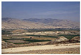

Department
of Ancient Near East >
research
> excavations > Sa'idiyeh, Jordan Tell
es Sa'idiyeh
|  View east across the Jordan Valley showing the site of Tell es-Sa'idiyeh |
Tell es Sa'idiyeh, identified as the biblical city of Zarethan, lies at the heart of the central Jordan Valley. The huge, double occupation mound occupies a key strategic position, commanding the crossroads of two major trade routes and dominating some of the richest and most fertile agricultural land east of the River Jordan. Excavations undertaken since 1985 by a British Museum expedition under the direction of Jonathan Tubb have revealed the great antiquity of the site's occupational history, with settlement phases extending from the Early Islamic period of the 7th century AD, as far back at least as the Early Bronze Age of the 3rd millennium BC. Excavations have shown that already by about 2900 BC, Tell es-Sa'idiyeh was a large and prosperous city, with well-constructed architecture and evidence for highly developed municipal planning.
The most significant finding in this Early Bronze Age phase has been of a large palace complex on the Lower Tell, with areas set aside for olive oil production and storage, wine-making and textile preparation. These activities were conducted on an industrial scale, clearly designed for international commerce. The pottery and other artefacts recovered from this early city display a level of refinement and sophistication unparalleled elsewhere in the Levant.
Equally remarkable discoveries relate to the city of the 12th century BC, where excavations have uncovered evidence to suggest that Tell es-Sa'idiyeh, like Beth Shan or Gaza on the other side of the Jordan River, was a major centre for the Egyptian control of Canaan during the final years of its New Kingdom empire. Substantial architecture, including an elaborate water system and Egyptian-style public buildings have been found on the Upper Mound. The same strong Egyptian component is also found in the contemporary cemetery which was found to have been cut into the long-abandoned and eroded ruins of the Early Bronze Age city on the Lower Mound.
The expedition has excavated, to date, some 450 graves, and many of these show unusual Egyptian features, both in terms of the grave-goods and the burial customs. See, for example, an ivory cosmetic box in the shape of a fish.
|